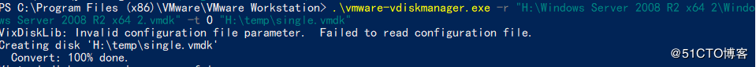

今天应其他部门的需求，把一个笔记本里的vmware的window2008的虚拟机转换为qcow2格式，在公司服务器上运行。
第一次做，用了许多时间
首先：
虚拟机的镜像分为多个vmdk文件，所以我们应该把这些vmdk文件合为一个vmdk文件。
用windows下的vmware-vdiskmanager.exe命令，这个在vmware的安装目录下。
"H:\Windows Server 2008 R2 x64 2\Windows Server 2008 R2 x64 2.vmdk" #我这里需要被合的源vmdk文件
"H:\temp\single.vmdk"#合一后的目标文件
开始查百度后很纠结，有好多个vmdk文件，源文件应该是哪个。后找到是一个与其他的不一样的，
其他的都是在这个后面加了一些数字，如：Windows Server 2008 R2 x64 2-0-000001-s001.vmdk等的。
即是vmdk文件中名字最短的那个。
完整命令如下：
C:\Program Files (x86)\VMware\VMware Workstation> .\vmware-vdiskmanager.exe -r "H:\Windows Server 2008 R2 x64 2\Windo
ws Server 2008 R2 x64 2.vmdk" -t 0 "H:\temp\single.vmdk"

然后，
复制到Linux系统里
在然后，
用qemu-img命令把vmdk文件转换为qcow2格式。
命令如下，我把上面的single.vmdk 名字改成了windows2008.vmdk
qemu-img convert -f vmdk -O qcow2 windows2008.vmdk windows2008.qcow2
最后，
在kvm里面正常使用该虚拟机
上面是昨天的 今天，检查昨天迁移的虚拟机，发现只有最原始的系统，数据都不在了。 后来找到原因，应该是快照的原因，磁盘c的vmdk文件里的知识最原始的系统，数据都在快照了，所以有了上面的情况。 去除快照后，在vmware的虚拟机的文件夹里面少了一部分文件。 在此用前面的方法合成一个，在操作中发现： 这个虚拟机有2个磁盘一个c盘，一个d盘。所以要合2次，一次合C盘，一次合D盘。 Windows Server 2008 R2 x64 2.vmdk #2k大小 C盘 Windows Server 2008 R2 x64 2-0.vmdk #2k大小 D盘 合好以后得到两个vmdk文件 再转换为qcow2文件 转换好后C盘的那个qcow2就可以去开启动系统了 会发现只有C盘，原来虚拟机里的D盘不见了， 这是只要为虚拟机添加硬盘，硬盘选择D盘转换的那个qcow2格式的文件（关机状态下） 再开机后，C盘和D盘都回来了。 然后进行网络设置，怎么都有问题，查看了几遍网络参数，都是没有问题的。 ping了一下路由，可以ping通。 -------------------------------------------------------- 又是一天 早上，我ping了路由和其他局域网内的主机。 应该是域名解析不行 ping了一下百度的ip，能ping通，然后就网络就正常了，，，


Ctrl+Enter 发布
发布
取消